Home
Ankara University TAC Particle Accelerator - Distributed Control Systems
Dec 12, 2010
The Complete Control System Architecture of Turkish Accelerator Center IR-FEL Project
During my time at Turkish (Particle) Accelerator Center, I was in charge of control systems at IR-FEL facility, designing, developing, and deploying control systems
software and infrastructure. As the lead and sole developer fully in charge of the control systems at this facility, I had to design and deploy the control systems ground up, and the following article summarizes the current progress, as of December
2010.
Abstract: Turkish Accelerator Center is anticipated to have one of the most modern implementations of distributed control systems used in any nuclear research facility in Europe. The complete control architecture is implemented as a soft
real-time distributed control system based on EPICS (Experimental Physics and Industrial Control System) software with various EPICS compliant hardware ranging from IPCs, PACs, to PLCs. With a distinguished two-tier approach, the backbone of the control
network infrastructure is fiber optic 10 Gigabit Ethernet while gateways provide data access for LAN workgroups and web clients. This two-tier approach completely isolates the stable control network from the other workgroup networks where possible
software glitches, viruses, and other problems may clog the data links. As a backup to fiber optic 10GbE, a separate copper Ethernet is deployed with redundant switches for all the distributed control nodes. Whenever necessary, custom control software
is developed (and deployed) using native EPICS .NET Library on the client workstations at the control room or the IOC (input output controller) nodes throughout the accelerator hall. Thus software architecture is standardized on a typical client-server
model on each node, backed up with publish/subscribe messaging paradigm throughout the control network. With the integration of all the subsystems, the project is expected to deliver exceptional performance, scalability, and reliability in less than
twelve months’ time. When completed, the project will mark a milestone for future nuclear research laboratories in terms of the industrial grade reliability and IT level of technology of its control system.
This article serves as the abridged version of the full technical design report, which you can find in .pdf format in the following resources section. The rest of the article will provide an overview of Turkish Accelerator Center’s IR-FEL and Bremsstrahlung
facility’s distributed control systems (design, development, and deployment) and its current progress as of '10.
- Resources
- Overview
- Project Requirements Analysis
- System Design
- Distributed Control Systems Architecture
- Input Output Controllers and DAQ Hardware
- Network Infrastructure
- Software Systems Architecture
- EPICS .NET Library
- Control Nodes and the Workflow
- Human Machine Interface (HMI)
- Data Management and Storage
- Collaboration Web Site
- System Development & Deployment
- Configuration Management
- Floor Plan
- Grid Control
- Beam-line Control
- Diagnostic Systems
- Conclusion and Future Projections
1. Resources
Below are the main project documentation, presentation, and posters (all in .pdf format). In addition, there are numerous articles published on the subject on scientific publications, and there are many speeches that I gave covering the control systems.
If you like to get more information, you can contact me directly.
Complete Project Presentation The above presentation was first given to T.A.C. International Machine
Advisory Committee and covers all the project report.
2. Overview
The technical design of the control systems is completed with partial implementation on the injector portion of the accelerator. The technical design is not conceptual only, meaning that control hardware and software are intact. This way, implementation
of the control system on the remaining sections of the facility will be nothing more than replicating the work that was done for the injector sector. It is expected to transform this complete design into a complete implementation in the original 12
months’ time allocated for the project. Anticipated cost of realizing this design is around €80.000 (excluding DAQ hardware), which is much lower than €500.000 budget allocated for this project. At this point, to account for iterative development
methodology, implementation of the project and attendance to all related conferences will be carried out in parallel to provide a constant stream of feedback from industry experts around the world.
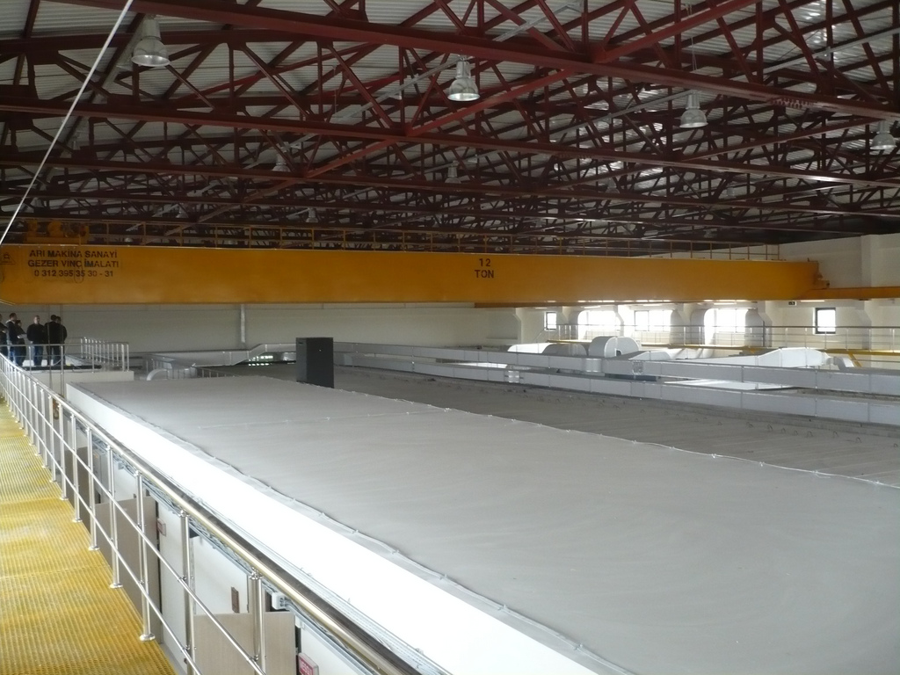
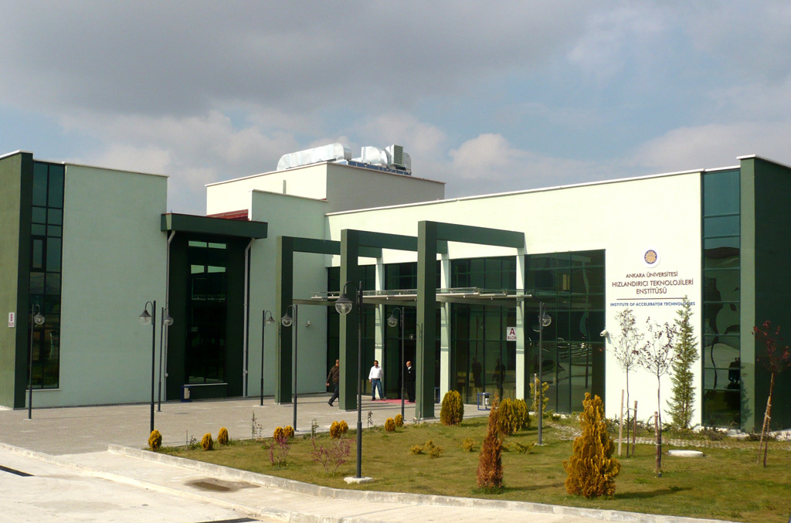
Preceding photos are from the T.A.C. IR Free Electron Laser facility’s progress report (end of year 2010). All the systems detailed in the following parts of this article describe the work that I have done for this facility. Turkish Accelerator Center
has many more facilities planned to be constructed in the coming years, including proton accelerator facility, synchrotron radiation facility, and particle factory.
3. Project Requirements Analysis
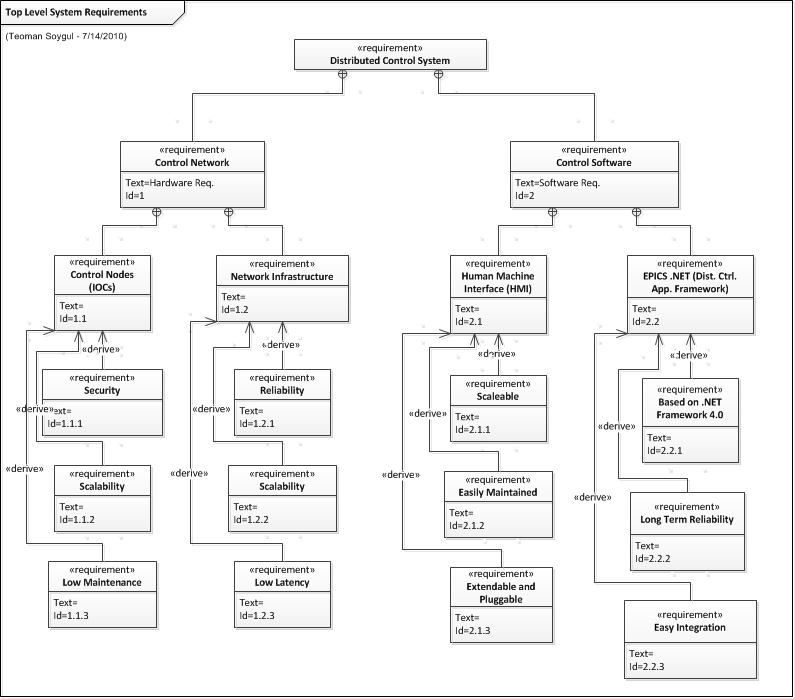
This project requires two major components to function, which are the hardware systems that make up the control network, and the distributed control and computing software to be used along with the required hardware. While the accelerator hall
requires intensive control and supervision, control room requires crystal-clear process visualization to provide a friendly user interface to a complex system. The prime concern of this project is to provide industrial grade long-term stability and
reliability while making use of the innovative technology. This way, the project can be a breakthrough in technology amongst other nuclear research facilities. Any requirement that is a direct outcome of the given objectives can be grouped either
as technical or functional requirement. Functional requirements are the desired set of behaviors of all the components of the control system. On the other hand, technical requirements are the design goals that are to be met to achieve the desired
system behavior with regard to scalability, stability, performance and other factors, which govern the system response.
4. System Design
 Overall system design is crafted to satisfy all the functional and technical requirements, which were previously mentioned in the project requirements analysis phase. Many of the diagrams used in capturing the requirements were altered and then
combined to transform them into a single components diagram, which is seen on the left. This illustration visualizes all the major components of the design of distributed control and computing system. To keep the design as simple as possible, not
all the technical requirements are transformed into system components, rather they show up as separate considerations at the design and implementation of each component.
Overall system design is crafted to satisfy all the functional and technical requirements, which were previously mentioned in the project requirements analysis phase. Many of the diagrams used in capturing the requirements were altered and then
combined to transform them into a single components diagram, which is seen on the left. This illustration visualizes all the major components of the design of distributed control and computing system. To keep the design as simple as possible, not
all the technical requirements are transformed into system components, rather they show up as separate considerations at the design and implementation of each component.
4.1 Distributed Control Systems Architecture
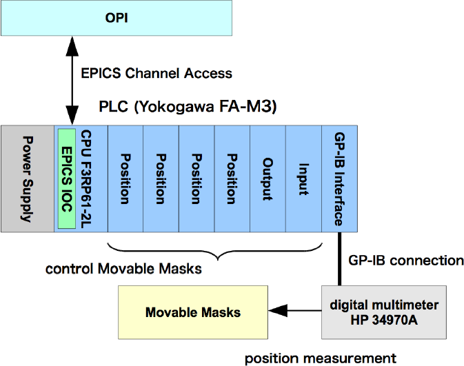For any industrial grade control system, PLCs (programmable logic controllers) are invaluable. Their reliability is unmatched. They also provide a very cost effective solution to many classical control challenges (like high voltage switching). With
the advance of technology, some of the new PLCs are now equipped with Embedded PCs which are equipped with a general purpose CPUs in addition to conventional ladder logic processors. This sort of PLCs were chosen the task in this project due to their
ability run Windows Embedded OS on their general purpose CPUs, which provides the capability of running required software for distributed control and computing tasks. In conjunction to the safety requisites, these PLC boxes can be used within the
accelerator hall inside lead boxes. Implementing PLC units as input/output controllers was successfully accomplished for the first time at J-PARC then at KEKB at Japan. A sample configuration is illustrated on the left. In addition, industrial PCs
with slot count 14 and more were chosen for the tasks that require a high amount of I/O and plenty of processing power. The details of these selections are discussed in the coming sections but their importance is that they make up the control nodes
of the distributed control system, which make up the kernel of all the control operations. Thinking about the fact that in distributed systems there is no central control server, these control nodes make up the control server entity as a whole.
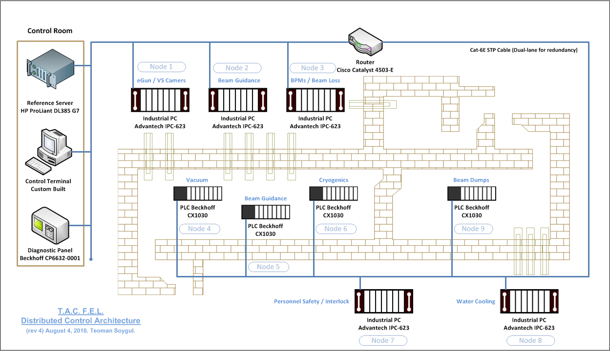
On the figure above, all the control nodes are distributed and the existence of reference server is only to provide the nodes with software updates and static reference data. Network redundancy is achieved through the usage of double lane Cat-6E
STP (shielded twisted pair) cables in dual lane configuration. Additional fiber-optic high-speed network dedicated to the industrial PCs are illustrated in detail in the upcoming sections. In addition, the reasoning behind the hardware choices is
given below.
4.2 Input Output Controllers and DAQ Hardware
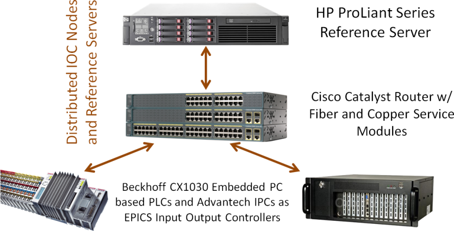
In this distributed architecture, input output controllers (IOCs) are the computing units with attached data acquisition modules (DAQ). These computing units may be full-blown computers or PLCs with general-purpose processors, as it was indicated
beforehand. For this project, two distinct types of controllers were chosen to function as IOC boxes. These two types of units were chosen for different configuration scenarios, and their location within the facility is described by the previous Figure
4‑3. In essence, operation of the control nodes only depends on the core router. Failure of the reference server or some of the nodes does not affect the functionality of the rest of the system. Below is a very simple representation of the control
network architecture along with the chosen units of controllers. Following sections build on this architecture to describe and define the control network infrastructure. The schema on the left describes how IOC boxes communicate with each other and
how they retrieve software updates from the reference server.
4.3 Network Infrastructure
In accordance with the technical requirements, network security and performance along with reliability is taken to be the priorities of the design. Counting for the performance requirements, backbone of the control network is planned to be a fiber optic
10 Gigabit Ethernet while the LAN workgroups are to communicate on standard Gigabit copper Ethernet over Cat-6E cables. To provide redundancy in control network, along with fiber optic Ethernet, a two-lane Gigabit Ethernet is deployed with Cat-6E
STP (shielded twisted-pair) cables. The STP cables are more expensive but they are shielded from electromagnetic and RF interferences. The complete design is illustrated with the below figure.
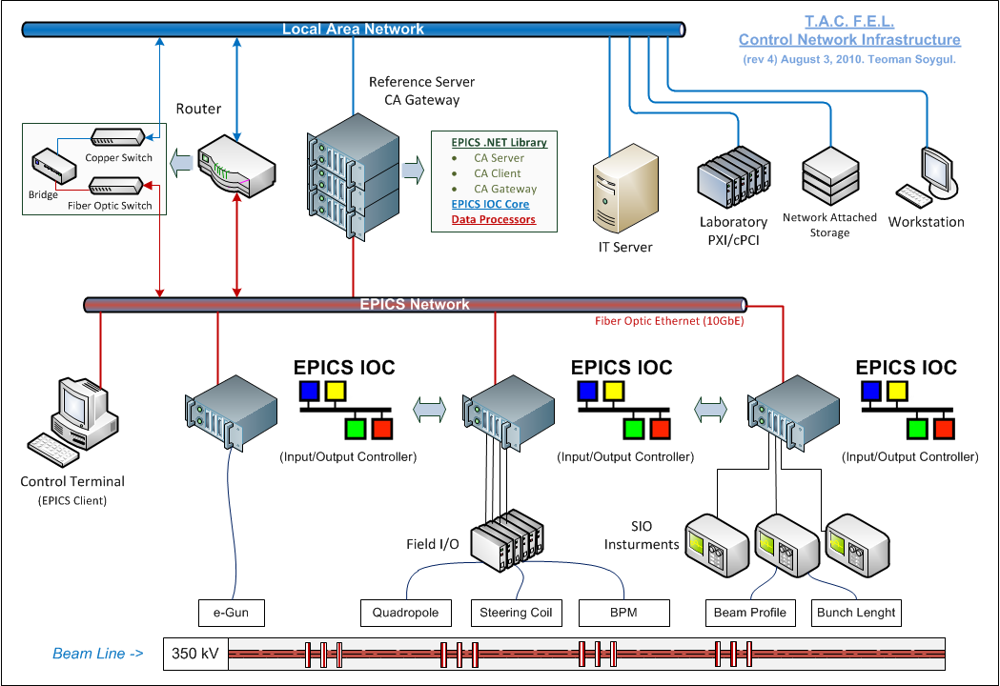
The figure depicts a distinguished two-tier approach to separating the control network from the rest of the workgroups, which are on a separate LAN. Any computer that is on the LAN workgroup is meant to access data on the control network through
the gateways. This two-tier approach completely isolates the stable control network from the other workgroup networks where possible software glitches, viruses, and other problems may clog the data links.
4.4 Software Systems Architecture
Due to the reasons listed at the technical requirements section (and just like the hardware systems), the control software architecture must be a distributed computing standard while not sacrificing performance for scalability. While each autonomous
control node should be able to communicate with each other through network, nodes should not be dependent on each other for operation, which makes them truly autonomous, and failsafe. Although each node should have the ability to broadcast the network
with certain information, most of the communications should be through direct point-to-point links. On the other hand, for security reasons the workstations may not be able to get point-to-point links with the control nodes if not mandatory, rather
the preferred way to communicate with the control network should be through a gateway whenever possible. It is essential to note that, this type of indirect communication adds considerably to the network overhead so it should be used with care. Below
diagram clearly describes the intended distributed computing architecture.
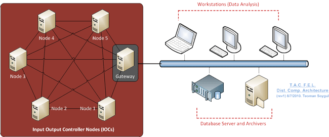It is important to note that the development of the required software for this sort of a complicated architecture is a long-term business and may take a considerable amount of time. Development process should adhere to the basic rules of software
development life cycle. Although a typical waterfall model is not the prime model that is used at in-house software development, it is used in conjunction with the iterative model for most of the time. Thinking about the fact that most of the software
developed at this facility is also intended for open-sourcing, added input from other users is thought to accelerate the development cycle for any new version of the applications released under GNU General Public License v3. The reasoning behind this
choice of releasing most of the software development efforts as open source is to provide a notable contribution to the software used nuclear studies, especially in the particle acceleration field. In addition, the core software used in many of the
distributed computing operations is already open source and needs community help, which this project also aims to provide. Input to the open-source community and feedback from it is essential at every step of the software development process.
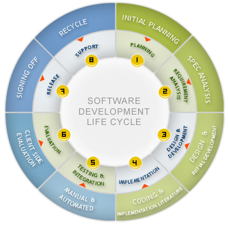Each planned release for software is proposed to go through a complete development cycle to ensure quality. The planning stage always depends on Microsoft Project Pro 2010 while the bug reporting and issue tracking is handled by another open-source
project Trac. As it will be mentioned extensively in following pages, implementation is done using Microsoft Visual Studio 2010with .NET Framework 4.0 and Developer Express UI components. Software testing depends on built-in unit testing capabilities
of Visual Studio Ultimate edition thus, no additional tool is necessary. ReSharper, a Visual Studio add-on, is used to ensure code quality and the code documentation is prepared with Sandcastle documentation compiler while the users manuals are authored
with Help & Manual. Finally, the deployment is done using Microsoft ClickOnce deployment technology.
4.4.1 EPICS .NET Library
 (What is given here is just a summary. You can see the full article about this sub-project
here
). Distributed computing requires low latency and high-speed node-to-node communication. Normally this would require source and destination node IPs to be known by the application at the run time. To remove the burden of dealing with node
IPs and resource IDs (or the GUIDs) of the programmer, EPICS .NET Library was developed for this project. This library deals with all the low-level details of TCP/IP and UDP connections between nodes, beaconing, broadcasting, packet transmission and
losses, and many more of small but critical functions of distributed computing. Abstracting away all the low-level technical details, developers can focus on the functionality rather than heft technical issues. This library is essentially a .NET Framework
compatible version of conventional EPICS (Experimental Physics and Industrial Control System) libraries and tools. On the other hand, it is not a direct port of legacy EPICS. Since the latest major release of EPICS, software was almost 10 years ago
and continuous advances in computer sciences resulted in new and innovative technologies. One of the most important of those technologies, Microsoft .NET Framework, makes up the foundation of this brand new distributed control and computing library.
Leveraging the full potential of .NET Framework, EPICS .NET Library makes use of many essential tools like Windows Communication Foundation for communication routines, PLINQ and Task Parallel Library for task and data parallelism, ADO.NET and Entity
Framework for distributed database tasks, ASP.NET for data publishing, and many more of libraries that are offered natively with the framework. In addition, many of the programming techniques offered by the CLR (like generic programming for type safety
or extension methods and classes for backwards compatibility) and advanced C# programming constructs and language features are used throughout the library. The library is written purely in C# with 100% managed code thus maintaining full CLI compatibility.
This way, along with this library any available .NET programming language can be used (C#, Visual Basic, C++/CLI, LISP .NET, IronRuby, IronPhthon, and many more). This library is fully compliant with .NET Framework 4.0 and upcoming Mono 2.8 with minor
modifications. Creating client/server nodes with EPICS .NET library is a simple task:
(What is given here is just a summary. You can see the full article about this sub-project
here
). Distributed computing requires low latency and high-speed node-to-node communication. Normally this would require source and destination node IPs to be known by the application at the run time. To remove the burden of dealing with node
IPs and resource IDs (or the GUIDs) of the programmer, EPICS .NET Library was developed for this project. This library deals with all the low-level details of TCP/IP and UDP connections between nodes, beaconing, broadcasting, packet transmission and
losses, and many more of small but critical functions of distributed computing. Abstracting away all the low-level technical details, developers can focus on the functionality rather than heft technical issues. This library is essentially a .NET Framework
compatible version of conventional EPICS (Experimental Physics and Industrial Control System) libraries and tools. On the other hand, it is not a direct port of legacy EPICS. Since the latest major release of EPICS, software was almost 10 years ago
and continuous advances in computer sciences resulted in new and innovative technologies. One of the most important of those technologies, Microsoft .NET Framework, makes up the foundation of this brand new distributed control and computing library.
Leveraging the full potential of .NET Framework, EPICS .NET Library makes use of many essential tools like Windows Communication Foundation for communication routines, PLINQ and Task Parallel Library for task and data parallelism, ADO.NET and Entity
Framework for distributed database tasks, ASP.NET for data publishing, and many more of libraries that are offered natively with the framework. In addition, many of the programming techniques offered by the CLR (like generic programming for type safety
or extension methods and classes for backwards compatibility) and advanced C# programming constructs and language features are used throughout the library. The library is written purely in C# with 100% managed code thus maintaining full CLI compatibility.
This way, along with this library any available .NET programming language can be used (C#, Visual Basic, C++/CLI, LISP .NET, IronRuby, IronPhthon, and many more). This library is fully compliant with .NET Framework 4.0 and upcoming Mono 2.8 with minor
modifications. Creating client/server nodes with EPICS .NET library is a simple task:
// Create the client var localClient = new EpicsClient(); var memoryUsageResource = localClient.CreateChannel("MyIOCNode:MemoryUsage"); Console.WriteLine(memoryUsageResource.Get()); // Create the server var myIOCNode = new EpicsServer(); var memoryUsage
= myIOCNode.GetEpicsRecord("MyIOCNode:MemoryUsage"); memoryUsage.VAL = System.Diagnostics.PerformanceCounter("Memory", "Available MBytes");
EPICS .NET Library fall in the client-server model of distributed computing architectures. Each input/output controller node is turned separately into clients and servers so each node is capable of requesting or sending information. Each system resource
can be published on the EPICS network (which is a TCP/IP connection for node-to-node communications and UDP connection for beaconing and broadcasting). What is described by a resource may be the CPU usage data or the memory usage statistics or a signal
flowing through an analog/digital converter attached to the system. Since the library uses publish/subscribe messaging paradigm for passing messages on the network any input or output signal collected or created by the input/output controllers can
be published on the network with a unique identifier.
4.4.2 Control Nodes and the Workflow
The control nodes make up the core of the control network but they are only functional when they start executing their internal control logic (the control workflow). In a typical configuration, control nodes like industrial PCs or PLCs have data acquisition
hardware that collects analog or digital signals from the machines. This DAQ hardware then converts these signals into digital data, which is processed by the control node’s processor, which is finally published on the EPICS network using the control
library. Any other computer requiring to access this data will simply subscribe to it again using the control library.
 The above figure summarizes the control node configuration that is used with the control system. Once desired DAQ hardware is put in the node chassis, the EPICS .NET Library takes care of publishing the required signals acquired from the DAQ hardware
on the control network. Then the node-to-node or node-to-workstation data flow is regulated with the previously mentioned publish/subscribe messaging paradigm. On the other hand, internal control logic is controlled mainly with Windows Workflow Foundation which
is again a part of .NET Framework. Workflow Foundation controls the internal data flow within the nodes at the higher logical level. Low-level details are all taken care of in the code to achieve maximum performance with the overall workflow.
The above figure summarizes the control node configuration that is used with the control system. Once desired DAQ hardware is put in the node chassis, the EPICS .NET Library takes care of publishing the required signals acquired from the DAQ hardware
on the control network. Then the node-to-node or node-to-workstation data flow is regulated with the previously mentioned publish/subscribe messaging paradigm. On the other hand, internal control logic is controlled mainly with Windows Workflow Foundation which
is again a part of .NET Framework. Workflow Foundation controls the internal data flow within the nodes at the higher logical level. Low-level details are all taken care of in the code to achieve maximum performance with the overall workflow.
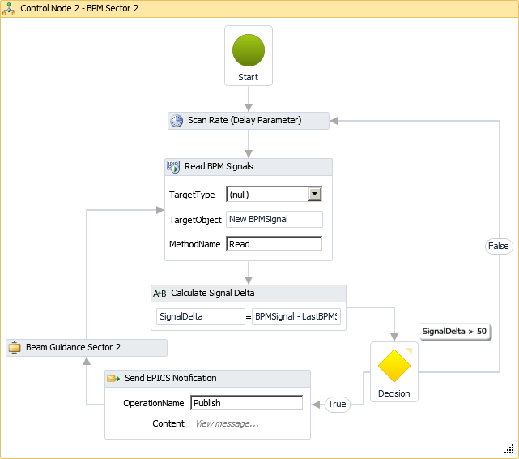
The preceding workflow diagram clearly describes the series of events taking place internally at the control node that is depicted as “Control Node (Industrial PC)” at Figure 4‑16. Note that this is not just a pretty illustration; this is the
actual code that controls the workflow! With the new features of Visual Studio 2010, creating the workflows completely in the designer is now possible. The above diagram illustrates how the scan rate for the DAQ hardware is set, how BPM signal is
evaluated and published on the EPICS network, and finally how the beam guidance code is notified of the current situation. The beam guidance is again automatized by another workflow, all internally at the control node.
4.4.3 Human Machine Interface (HMI)
Almost all of the human-machine interactions occur at software level thus providing the users with a solid interface is essential. The main goal of this user interface is to provide the means for effective operation and control of the machines and gather
the feedback signals on a single screen, which aids the operator in making operational decisions. Although almost all of the control procedure is automated, variations in the scientific experiment scenarios compel constant supervision of the diagnostic
monitors where the information presented must be crystal-clear. Again, consistency and usability is up to par with the rest of the system so at every step of the control, the users will be met with a familiar interface. It is important to note that
just like any other control software developed for the IR-FEL facility, this HMI software makes extensive use of our EPICS .NET Library to communicate with the rest of the distributed control system.
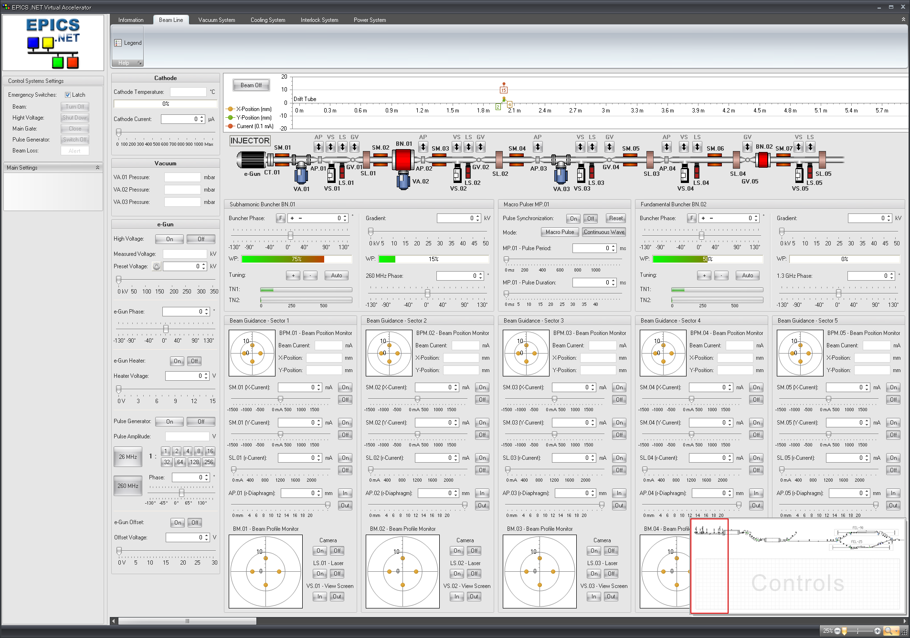
One of the reasons for developing an EPICS library natively in C# programming language with Microsoft .NET Framework 4.0 was to be able to benefit from the unmatched UI capabilities of Microsoft Visual Studio 2010 in combination with Developer Express
Windows Forms UI components. As a side note, Windows Forms was chosen as the UI base rather than the brand new Windows Presentation Foundation 4.0, due to its maturity and suitability for industrial grade applications with its proven stability. Developer
Express UI components were used to enhance the user experience, regarding the fact that they are considered to be the best UI components available for WinForms, for their stability and functionality.
Each beam line component is visualized by its unique set of graphics describing the status of that component/equipment at a given time. Some of the beam line elements require manual activation to gain functionality. To enable quick access to the provided
functionalities, small buttons are places on top of some components so the operator can quickly close a gate valve, set the aperture or drive the beam profile monitor mirrors into the beam line.

4.4.4 Data Management and Storage
During the experiments, data acquisition hardware produces massive amounts of data. To reproduce and analyze the experiment scenarios, selected portions of these data must be stored. In addition, EPICS .NET Library only publishes real-time values on
the network thus when operator requests detailed graphs on histograms of this data, it needs to be retrieved from an immediate storage. EPICS Archiver takes care of storing the values for future graphing, capturing the selected resources published
on the control network. All these data captured from the network by the EPICS Archiver is stored with Microsoft SQL Server 2008 R2 Enterprise on the data/reference server.
4.5 Collaboration Web Site
Working with the rest of the IT systems, the collaboration web site makes sharing information between the project staff a breeze. The provided screenshot, which is from the homepage of the web site features project logbook, news, notifications, reports,
and events makes up only a small portion of information sharing capabilities of the web site. Almost all of the information presented at the web site is also sent as weekly, monthly, or quarterly reports and newsletters where project members can subscribe
in order to be notified of the latest project news and events. You can visit the collaboration site here: www.tarla-fel.org
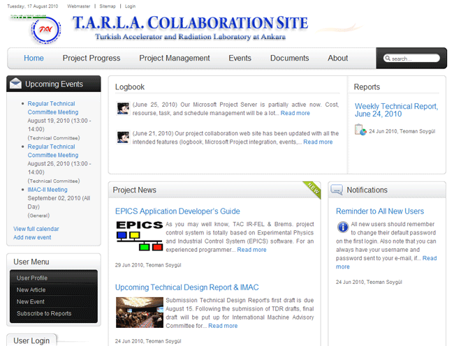
5. System Development & Deployment
The system implementations that are done according to the project plan are listed below. The roles and locations of the currently implemented configurations are as follows.
5.1 Configuration Management
All the system configurations are managed with Microsoft System Center Configuration Manager. Additional information is not presented here since access to system configurations is classified. Additional details can be retrieved via logging into the
system, once the IT servers are fully deployed.
5.2 Floor Plan
Control room is design for a typical 5-workstation configuration. One master terminal has the ultimate power to override any control while the workstations are for general-purpose control and data processing. The control room is equipped with two 19-inch
racks of 20U size. One is for the servers while the other is for network equipment and for future growth.
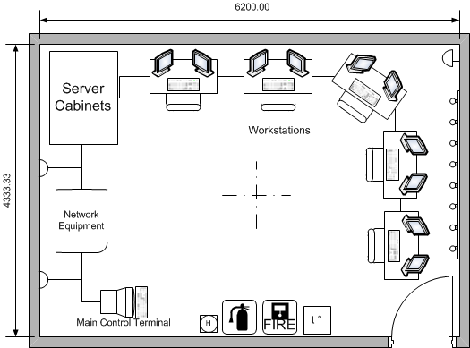
When completed, control room will be equipped with workstations featuring a comfortable 2-monitor setup for each operator or scientist. Fitted with comfortable chairs, control room should provide a friendly environment, especially for night shift operators.
Below is the illustration of the intended setup:
5.3 Grid Control
The electron gun grid is a general part of the system responsible for pulse generation and the filament, which produces the electron cloud for initial acceleration. The pulses are generated with a pulse generator modified for 60V pulse amplitudes. A
trigger generator is used to trigger the pulse generator to initiate a continuous wave or a pulsed output. These two equipment are controlled with a PLC based IOC which are all fitted inside a structure called the “hamburger”. The naming is due to
the structure’s shape and it is responsible for providing HV (350kV) isolation from the environment. This insulation dictates that no conducting cable should intersect the insulation barriers thus all outside communication is done via “Black Box Media
Converter Switch 10/100Mbp Copper to 100Mbps Fiber”, which is connected to the PLC unit. As there can be no power cable penetrating the insulation barrier, all the required power is transmitted with a 230 VAC to 230 VAC transformer with an isolation
voltage of 350kV. An illustration of this structure is given below.
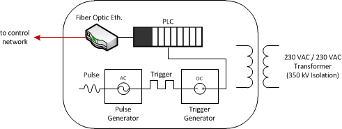
5.4 Beam-line Control
Beam line is equipped with devices like solenoid for beam focusing, steering magnets for beam guidance, gate valves for sector division, and many more equipment used in accelerating and delivering the electron beams to the free electron laser paths.
The low-level control of all these equipment is done by the control nodes using the EPICS .NET Library as it was described before. As it is illustrated in Figure 4‑3, the control software interacts with these pieces of equipment through the input
output controls that are located on selected spots in the facility. Finally, the operator interacts with the control software using the HMI software that is described in previous sections.
5.5 Diagnostic Systems
Unlike usual industrial plant control systems, diagnostic equipment are not considered a natural part of the control system in accelerator facilities due to their extremely complex nature. In addition to this, and unlike the LLRF system, diagnostic
systems are not self-contained. Rather, they are designed to warn the supervisory systems in case of danger. Due to this, constant interaction between diagnostic and control systems is required. Just like interactions with all other machines in the
facility, these interactions are also carried out with the control nodes, namely the input/output controllers. For instance, a beam position monitor probe is a delicate piece of equipment that is designed to measure the beam position within the drift-tube
with a very high level of accuracy (in the order of micrometers). The signals coming through these probes are carried with RF cables to the nearest IOC that has an analog digital converter card with 16 bits of measurement accuracy and 250 KSPS measurement
rate or higher. Once the analog signal is converted to digital by the ADC, the EPICS .NET Library publishes the real-time data on the control network. Then this data is used as necessary to guide the beam in its correct path within the drift-tube.
Figure's right hand side column illustrates how this data is displayed on the HMI beam guidance panel for operator supervision.
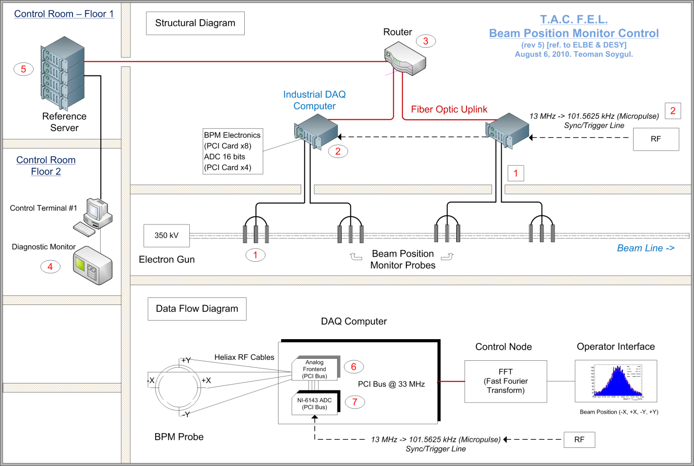
6. Conclusion and Future Projections
Near future objective of the project is to extend the current implementation of the distributed control systems to include remaining portions of the facility. Even though it is relieving to have a complete design and a partial implementation on the
injector section, which can be taken as a reference, some special parts of the system like the FEL lines is expected to prove challenging to realize. Even in the face of the aviating obstacles, the control system for the injector, linac-1 and linac-2,
and the mid/far FEL paths is expected to be delivered in the original 12 months’ time frame. The implementation of the control system for the bremsstrahlung room, machine and human protection, and interlock systems will be delayed until those sub-projects
are complete.
{kind=link}
{kind=link}
{kind=link}
{kind=link}
{kind=link}
{kind=link}
{kind=link}
{kind=link}